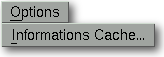

<!-- Documentation Xclamation (c)1994-2000 AXENE contact axene@axene.org>
<html>
<head>
<title>Menu Options</title>
</head>

<body BGCOLOR="#FFFFFF" BACKGROUND="Images/back.gif" TEXT="#000000">
<p ALIGN="right">


<p>
<br>
<br>
Le menu déroulant Options rend accessibles les paramètres de configuration
générale d'Xclamation.
<br>
<br>
<hr>
<br>
<center>

<br>
<i><small>
Photo d'écran&nbsp;: Menu déroulant Options
</i></small>
</center><p>
<br>
<hr>
<br>
<p>
<h3>Le menu Options comporte seulement l'entrée suivante&nbsp;:</h3>
<ul>
  <li><a NAME="cache_menu_entry">
     l'entrée <i>&quot;Informations Cache...&quot;</i> 
     permet de <b>modifier les paramètres du
     cache images</b>. Elle appelle la boîte de dialogue
     '<a HREF="Box_Image_Cache.html">Informations Cache Images</a>'.
     </a><p>
</ul>
<br>
<hr>
<p ALIGN="right">
<p>
</body>
</html>
